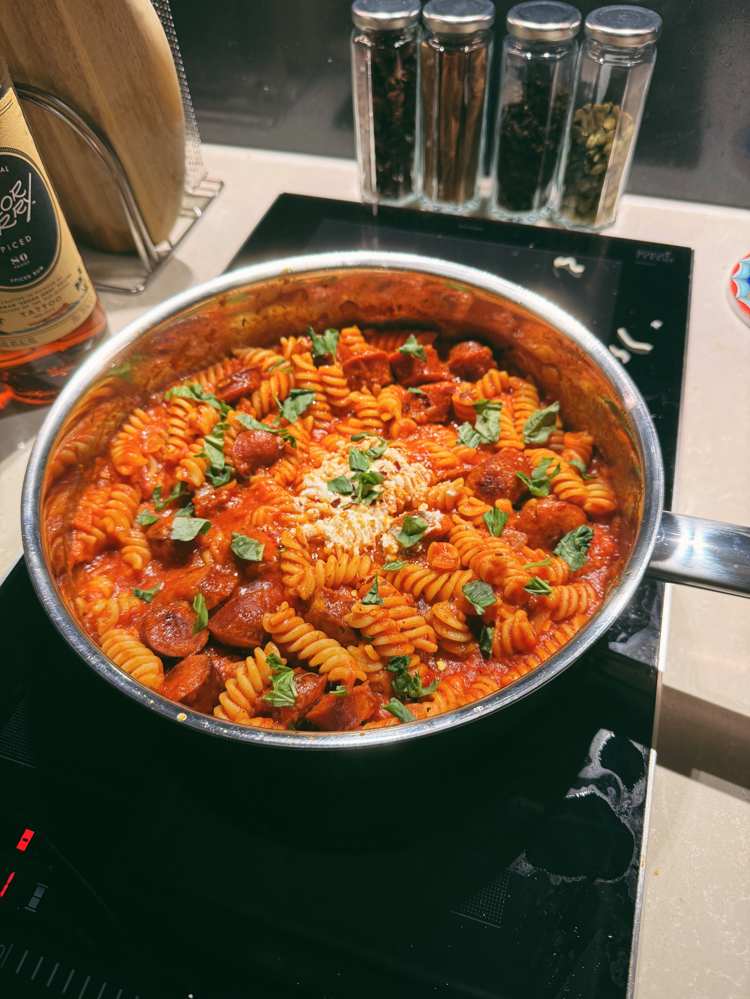

Tomato Sausage Pasta

Description
Pasta with marinara sauce, spicy sausages, and a bit of a kick.
Let's get started!
Ingredients
Serves 2
- 1 can of pureed tomatoes
- Half an onion, chopped
- 6 cloves of garlic, chopped
- 250g dried pasta of any kind
- 6 spicy sausages, chopped into circular pieces
- Dried oregano
- Fresh basil
- Olive oil
- Chilli flakes
- Ricotta to serve
Steps
- To make the marinara sauce, first combine pureed tomatoes, onion, garlic, dried oregano, chilli flakes, and olive oil in a pot.
- Bring the sauce to a simmer, then lower the heat and allow it to continue simmering for about 45 minutes, until droplets of oil are visible on the surface of the sauce.
- Add salt and/or pepper to taste, then set the sauce aside.
- In a pan, fry the sausage pieces until they are brown on both sides. For extra flavor, do not discard the oil that is left in the pan after frying the sausages.
- In a separate pan, cook the pasta until al dente in salted water according to packet instructions.
- Drain the pasta, place it back in a pan, and mix in the marinara sauce, sausages, and oil resserved from the fried sausages.
- Top the pasta with a few spoonfuls of ricotta and garnish with torn basil leaves before serving. Add more chilli flakes to taste.